Read left to right: join the digit bands, multiply, then check the tolerance.
Most classroom resistors are 4-band parts.
220 Ωdigits 22 × 10tolerance ±5%
Decoded BandsRed • Red • Brown • Gold
Precision NoteStandard classroom resistor
Allowed resistance range
Low limit · nominal value · high limit
Read the colors above and enter your prediction below.
Band Meanings
In 4-band mode the first two bands are digits. In 5-band and 6-band mode the first three bands are digits. Tolerance is band 4 in a four-band part and band 5 in five- and six-band parts. Band 6 gives temperature coefficient in ppm/°C.
Can you read it?
Start a challenge to hide the decoder. Read the colors from left to right and predict the nominal resistance.
Orientation Tip
The tolerance band is usually spaced a little farther from the other bands. For four- and five-band parts, hold that band on the right while reading from left to right. On six-band parts, a temperature band follows it. Spacing is a clue; if a real part is ambiguous, check its datasheet and measure it with power off, isolated from the circuit.
Colors
Value
Typical Use
Red, Red, Brown, Gold
220 Ω ±5%
Common LED current-limiting resistor
Brown, Black, Red, Gold
1 kΩ ±5%
Pull-up and pull-down circuits
Yellow, Violet, Orange, Gold
47 kΩ ±5%
Sensor voltage dividers
Brown, Black, Green, Gold
1 MΩ ±5%
High-resistance input circuits
Real resistors: from breadboard to circuit board
Compare the model above with real components. Click any photo to enlarge it for a class discussion; use the arrow keys to move through the collection.
These photographs are public domain, CC0, or openly licensed Creative Commons works. Each caption identifies the photographer, source, and reuse license.
How resistors connect
A resistor can lie flat, stand upright, plug into a breadboard, or be soldered to a board. Its two terminals must connect to the intended circuit nodes. Ordinary fixed resistors have no polarity.
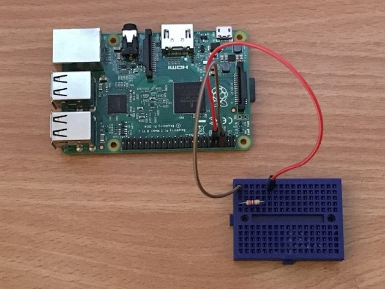
Plug in a resistorAn axial resistor bridges two different connection strips on this solderless breadboard. Its leads push into spring contacts. Putting both ends in the same connected strip would bypass the resistor.Photo: David Pride · Source · CC0. Resized; no content edits.Add the LEDThe next assembly step adds an LED beside the resistor. The resistor and LED share a breadboard node so they can form a series current path. The resistor can face either way; LED polarity matters.Photo: David Pride · Source · CC0. Resized; no content edits.
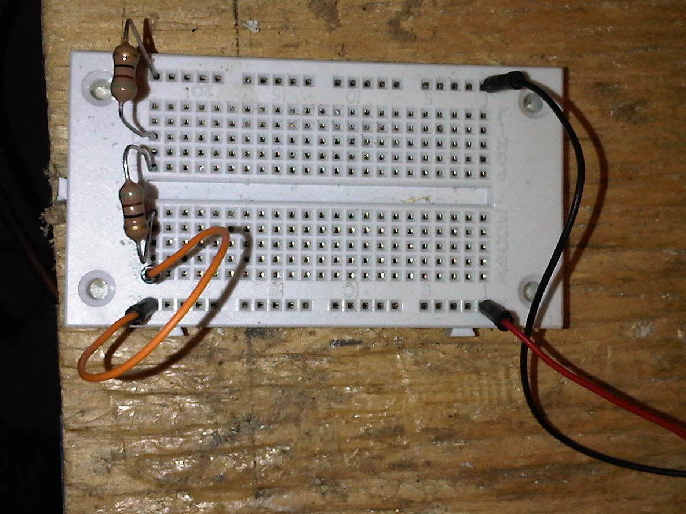
Trace the nodesTwo resistors bridge separate groups of breadboard contacts. Identify every shared metal strip and jumper before deciding whether parts are in series or parallel. Physical closeness does not prove an electrical connection.Photo: Toluaj · Source · CC BY-SA 3.0. Resized; no content edits.
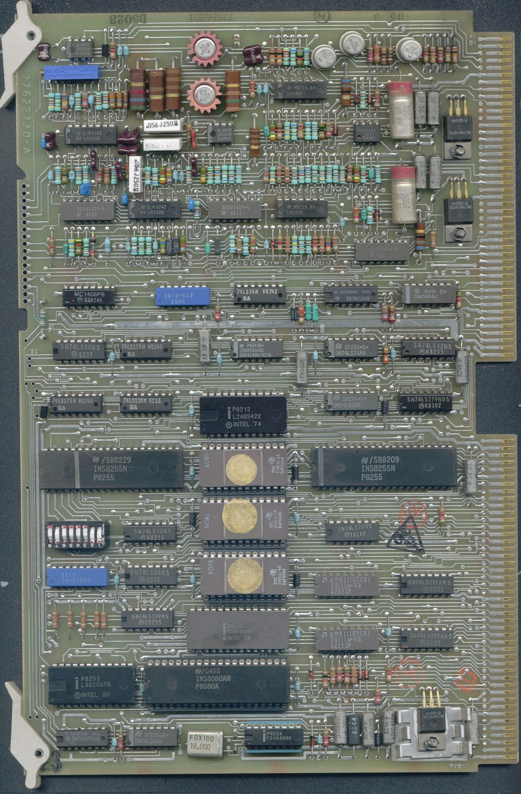
Through-hole PCB mountingFind the color-banded resistors among the chips on this real circuit board. Their bent leads pass through holes; solder joins each lead to a conductive pad. Copper tracks take the place of many breadboard jumpers.Photo: Fil22plm · Source · CC BY-SA 4.0. Resized; no content edits.
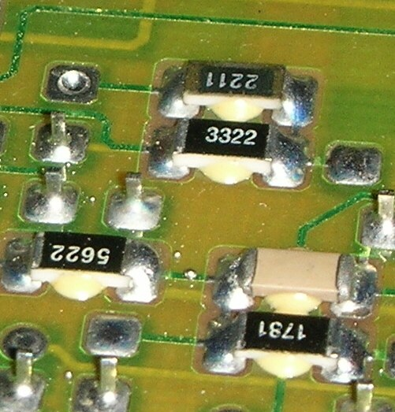
Surface-mount solder jointsThese chip resistors sit directly on copper pads. The solder at each end makes both a mechanical attachment and an electrical connection. Printed codes replace color bands: 3322 means 332 × 100 = 33.2 kΩ in the four-digit code. This is a real joint close-up, not a solder-quality standard.Photo: Hutschi · Source · CC BY-SA 3.0. Resized; no content edits.
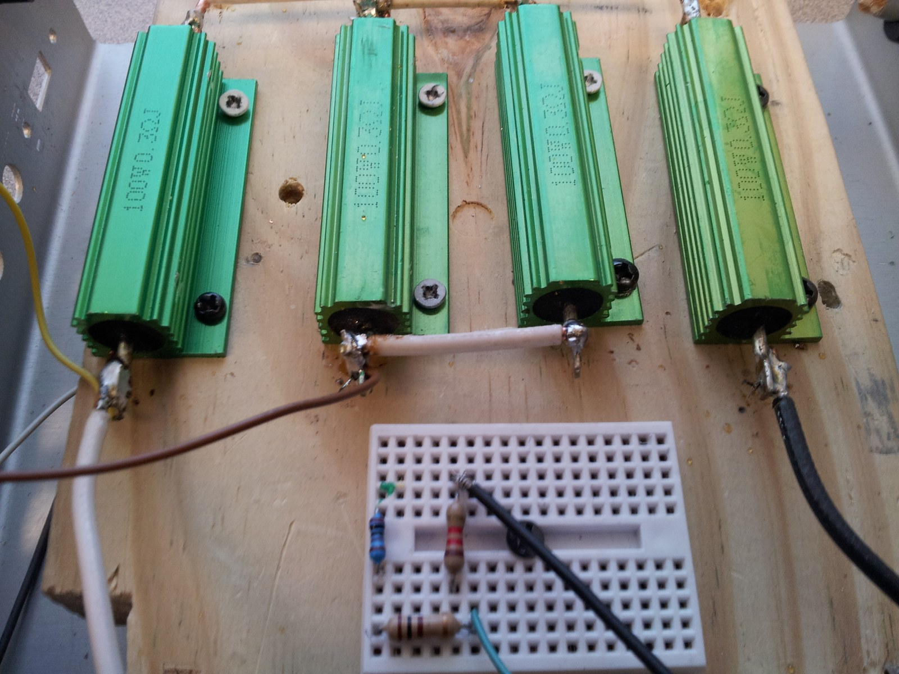
Wire the terminalsLarge power resistors can use solder lugs instead of breadboard-sized leads. The copper wire in this photograph links two lugs. To identify the complete series or parallel circuit, trace every terminal connection.Photo: Jesal.mistry · Source · CC BY-SA 3.0. Resized; no content edits.
From a temporary connection to a solder jointOn a through-hole PCB, insert the bent leads into the matching holes and solder each lead to its pad. On a surface-mount PCB, solder the metallized ends onto pads. Practice on an unpowered board with teacher supervision, eye protection, ventilation, and an iron stand. A solder bridge between separate pads can create an unintended connection.
Different packages, different jobs
Compare resistance (Ω), power rating (W), and mounting style separately. A tiny chip may have a high resistance; a large current-sensing shunt may have a very low one.
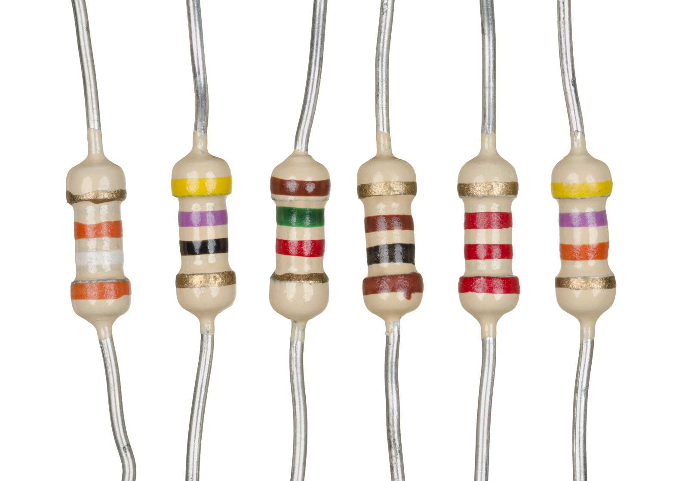
Same shape, different ohmsThese six similar-sized resistors have different values: from left to right, 39 kΩ, 47 Ω, 1.5 kΩ, 100 Ω, 2.2 kΩ, and 47 kΩ. All have gold tolerance bands (±5%). Body size alone does not tell you the resistance.Photo: Evan-Amos · Source · Public domain. Resized; no content edits.
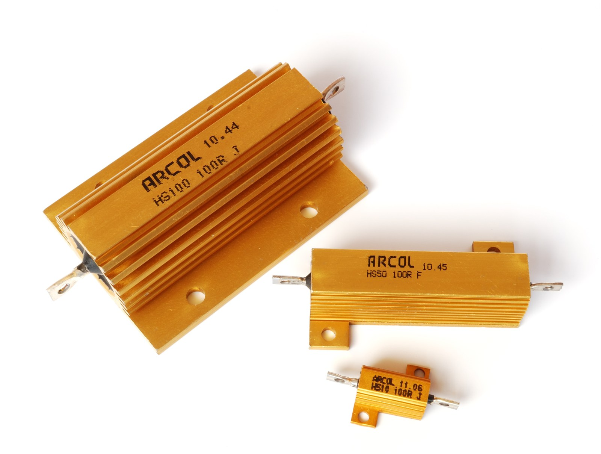
Same ohms, different wattsAll three aluminum-housed resistors are 100 Ω. Their model power ratings are 10 W, 50 W, and 100 W. The larger housing helps transfer heat; rated power depends on the manufacturer’s mounting and cooling conditions.Photo: Harke · Source · CC BY-SA 3.0. Resized; no content edits.
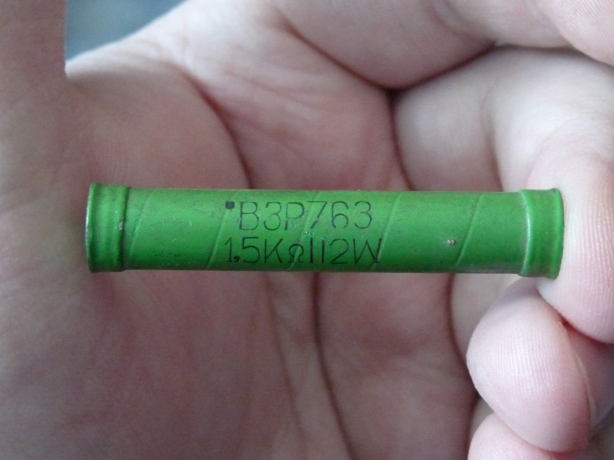
A larger wirewound resistorThis green VZR resistor is marked 1.5 kΩ and 12 W. Its large body helps it handle more heat than a small signal resistor. Compare its printed markings with the color bands on the axial parts.Photo: Dmitry G · Source · Public domain. Resized; no content edits.
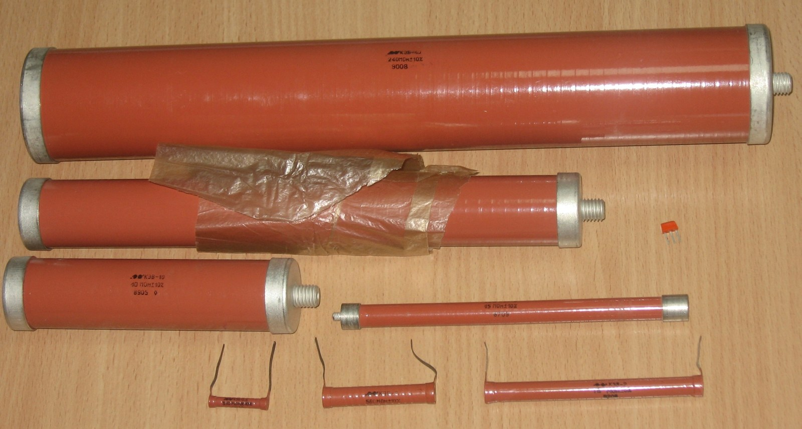
Into the gigaohm rangeThese КЭВ carbon-composition resistors belong to a high-voltage family spanning 510 kΩ to 47 GΩ, according to the source description. The pictured parts vary in package size and power rating; not every part shown is a gigaohm resistor. Read each marking or datasheet to identify an individual value.Photo: 155LA3 · Source · CC BY 4.0. Resized; no content edits.
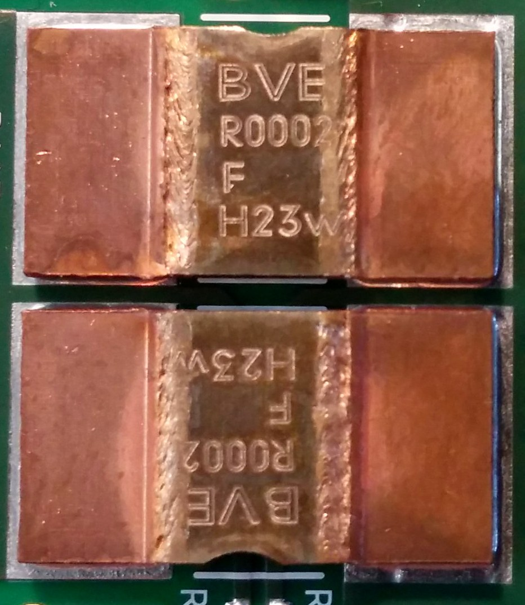
At the other extreme: microohmsThese two current-sensing shunts are each 200 µΩ (0.0002 Ω). A tiny resistance produces a measurable voltage drop when a large current flows. Their wide metal terminals carry current; a physically substantial resistor can have a very low resistance.Photo: wdwd · Source · CC BY-SA 4.0. Resized; no content edits.
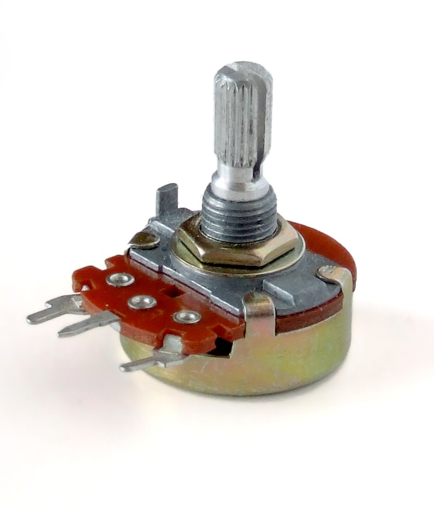
A resistor you can adjustA potentiometer has two ends of a resistive track and a movable wiper. The knob changes the wiper position. Using all three terminals makes an adjustable voltage divider; a wiper and one end can provide a variable resistance.Photo: Iainf · Source · CC BY 2.5. Resized; no content edits.
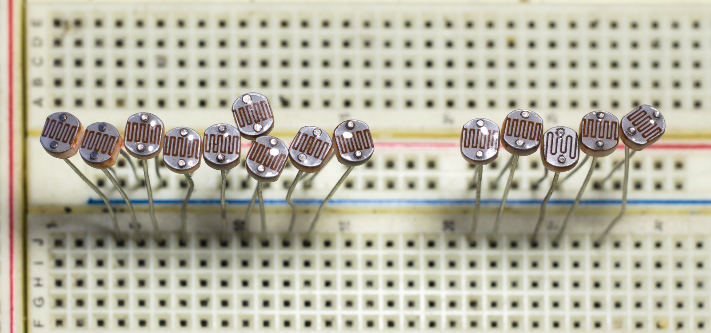
Resistance that responds to lightThese photoresistors are being sorted on a breadboard. Their exposed zigzag tracks respond to light: for these CdS parts, brighter light generally lowers resistance. A sensor divider can turn that resistance change into a voltage change.Photo: Retired electrician · Source · CC0. Resized; no content edits.
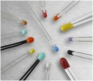
Resistance that responds to temperatureThermistors come in small bead packages as well as other shapes. Their resistance changes strongly with temperature: NTC types decrease as temperature rises; PTC types increase. Shape alone does not tell you which type or value you have.Photo: José Carlos González Sánchez · Source · Public domain. Resized; no content edits.
Gigaohms are a value, not a body size
1 GΩ = 1,000 MΩ = 1,000,000 kΩ = 1,000,000,000 Ω. At 5 V, an ideal 1 GΩ resistor passes only 5 nA. For comparison, 1 kΩ at the same voltage passes 5 mA—one million times as much current.
Specialist high-resistance parts are real: Vishay’s HTS datasheet lists models up to 100 GΩ. Such parts may use printed values rather than the familiar color bands. Check voltage and power ratings separately; do not copy high-voltage setups from a photograph.
This is a decoding example, not a claim that every 1 GΩ part uses color bands. Our photo shows a documented high-resistance family, not a confirmed 1 GΩ specimen.
Look, trace, explainFind a resistor’s two terminals in three different photos. Explain which connections are temporary and which are soldered. Then compare the 100 Ω power resistors with the 200 µΩ shunts: why doesn’t “larger” mean “more ohms”?
From a color code to a circuit
Resistance is not a power rating. The bands tell you ohms and tolerance, not how many watts the part can safely dissipate. More digit bands do not by themselves guarantee a tighter tolerance; read the tolerance band.
Temperature coefficient: 10 ppm/°C means a change of 10 parts per million per degree. Over a 50 °C change, that is 0.05%, or about 5 Ω for a 10 kΩ part. This is separate from its initial tolerance; the color alone does not tell you the direction of the change.


.jpg){kind=link}


.jpg){kind=link}